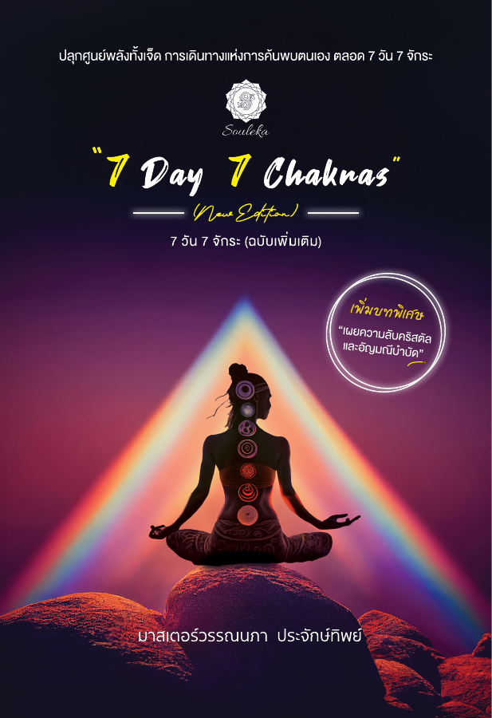

YOUR COLOUR. YOUR NEXT LITTLE STEP.
เริ่มจากคำหนึ่งประโยคที่ตรงกับความต้องการ
หากมีเรื่องที่ยังพูดได้ยาก ลองเขียนไว้ก่อนและเลือกวิธีที่คุณสบายใจ ความเงียบหรือการขอเวลาคิดไม่ได้ตัดสินว่าคุณสื่อสารได้ดีเพียงใด ให้ผลนี้เป็นจุดเริ่มต้นสำรวจสิ่งที่คุณอยากบอก
ผลนี้เป็นภาพสะท้อนจากแบบสำรวจตามแนวคิดจักระ ไม่ใช่การวินิจฉัยสุขภาพ และไม่ได้ตัดสินว่าคุณเป็นคนแบบใด
A MOMENT TO NOTICE
ไม่ต้องรีบเปลี่ยนทุกอย่าง
เริ่มจากการสังเกต
- มีเรื่องไหนที่ฉันอยากให้คนอื่นเข้าใจมากขึ้น?
- ฉันต้องการเวลา พื้นที่ หรือวิธีสื่อสารแบบไหนจึงจะสบายใจ?
- ก่อนตอบอีกฝ่าย ฉันมีอะไรที่ควรถามให้เข้าใจตรงกัน?
LET’S TAKE A LITTLE PAUSE
เข้าใจผล แล้วลองฝึกไปด้วยกัน
เลือกอ่านคำแนะนำ
หรือเริ่มจากสิ่งเล็ก ๆ ที่ทำได้ตอนนี้
เรียบเรียงสิ่งที่อยากบอกอย่างอ่อนโยน
วิดีโอใหม่กำลังจัดทำ
อ่านคำแนะนำฉบับข้อความได้ก่อน
คำแนะนำฉบับข้อความ
สคริปต์วิดีโอใหม่สำหรับอ่านและลองฝึกตาม อยู่ระหว่างเตรียมการถ่ายทำ
สวัสดีค่ะ วันนี้ชวนสำรวจจักระคอ ผ่านการฟังและการสื่อสาร ถ้ามีเรื่องที่คุณยังเรียบเรียงไม่ออก เราจะลองให้เวลากับมันทีละประโยคค่ะ
ที่ MANTRALO เราใช้แนวคิดจักระเป็นกรอบสำรวจตัวเอง ผลแบบสำรวจชวนให้สังเกตชีวิตช่วงนี้ เป็นเนื้อหาเพื่อสะท้อนตัวเอง ไม่ใช่การวินิจฉัยสุขภาพค่ะ
สีฟ้าในแนวคิดจักระเชื่อมกับเสียงและการแสดงออก การสื่อสารมีได้หลายแบบ ทั้งการพูด การเขียน การถามเพิ่ม หรือการขอเวลาคิด ลองเลือกสถานการณ์เล็ก ๆ ที่คุณอยากให้เข้าใจกันมากขึ้นหนึ่งเรื่อง
นั่งในท่าสบาย หายใจตามปกติ แล้วเขียนสามส่วนสั้น ๆ ส่วนแรกคือสิ่งที่เกิดขึ้นเท่าที่สังเกตได้ ส่วนที่สองคือความรู้สึกของฉัน และส่วนสุดท้ายคือสิ่งที่อยากขอ ใช้ภาษาธรรมดาที่คุณพูดอยู่แล้วค่ะ
ตัวอย่างเช่น เมื่อแผนเปลี่ยนโดยไม่ได้บอก ฉันรู้สึกสับสน ครั้งหน้าช่วยแจ้งฉันก่อนได้ไหม ลองอ่านประโยคของคุณเบา ๆ หรืออ่านในใจ แล้วถามว่ามันบอกความต้องการชัดไหม และเปิดพื้นที่ให้อีกฝ่ายตอบหรือยัง
การฝึกครั้งนี้จบที่การเรียบเรียงก็ได้ คุณเลือกเวลาและวิธีพูดที่เหมาะกับสถานการณ์ เก็บประโยคนี้ไว้ว่า ฉันเลือกคำและเวลาที่เหมาะกับสิ่งที่ต้องการสื่อสาร และฉันรับฟังคำตอบของอีกฝ่ายได้ค่ะ
ถ้าอยากอ่านและฝึกต่อ หนังสือเล่ม 7 วัน 7 จักระ New Edition ราคา 290 บาท แถม E-book ฉบับเต็ม ค่าส่ง 59 บาท ในประเทศพื้นที่ปกติ สอบถามยอดรวมและกำหนดส่งก่อนสั่งซื้อได้ค่ะ
คอร์สจักระ 12 บทเรียน ราคาเต็มตามข้อเสนอ 2,900 บาท ยอดซื้อหนังสือหรือ Starter ที่เข้าเงื่อนไขเป็นเครดิตได้สูงสุด 290 บาทหนึ่งครั้ง หลังทีมงานตรวจสอบ เมื่อได้เครดิตเต็มจึงจ่ายเพิ่ม 2,610 บาท ไม่รวมค่าจัดส่งและสินค้าเพิ่มค่ะ
ลองเรียบเรียงสิ่งที่อยากบอก
ใช้เวลาประมาณ 1 นาที ทำเท่าที่รู้สึกสบาย
- 1
เลือกสถานการณ์เล็ก ๆ หนึ่งเรื่อง และหายใจตามปกติขณะทบทวน
- 2
เขียนให้ครบสามส่วน: สิ่งที่เกิดขึ้น ความรู้สึกของฉัน และสิ่งที่อยากขอ โดยใช้คำที่คุณพูดจริง
- 3
อ่านเบา ๆ หรืออ่านในใจ แล้วปรับให้ชัดและสุภาพ เลือกเองว่าจะสื่อสารเมื่อไรหรือยังเก็บไว้ก่อน
“ฉันเลือกคำและเวลาที่เหมาะกับสิ่งที่ต้องการสื่อสาร”
ไม่ต้องทำให้สมบูรณ์แบบ แค่ให้เวลาตัวเอง
มีคู่มือเริ่มต้น Checklist และบันทึก 7 วันให้เปิดอ่านได้ฟรี

เริ่มจากหนึ่งเล่มค่อย ๆ รู้จักตัวเองครบทั้ง 7 จักระ
YOUR FIRST CHAPTER
อยากเข้าใจให้มากกว่า
ผลสำรวจครั้งเดียว?
หนังสือ 7 วัน 7 จักระ ชวนคุณกลับมาอ่าน ทำความเข้าใจ และทบทวนในจังหวะของตัวเอง
- หนังสือ New Edition 1 เล่ม พิมพ์ 4 สี
- แถม E-book ฉบับเต็ม อ่านทบทวนได้
- ขอตรวจเครดิตเพื่อเรียนคอร์สต่อได้สูงสุด 290 บาท
ค่าส่ง 59 บาท ในประเทศพื้นที่ปกติ
ดูรายละเอียดการจัดส่งและวิธีรับ E-book ก่อนสั่งซื้อ
KEEP YOUR LEARNING GOING
หนังสือเป็นจุดเริ่มต้น
คอร์สช่วยให้เรียนต่อเป็นลำดับ
คอร์สจักระ 12 บทเรียน ตั้งแต่พื้นฐาน จักระทั้ง 7 การฝึกพลังงาน สมาธิจักระสี และภาษาสี พร้อม Starter ดิจิทัลตามข้อเสนอ
ดูว่า 12 บทเรียนอะไรบ้างเครดิตใช้ได้หนึ่งครั้งหลังตรวจสอบยอดซื้อ ไม่รวมค่าจัดส่งและสินค้าเพิ่ม การเปิดหน้านี้ยังไม่ใช่การยืนยันเครดิต
ค่อย ๆ รู้จักตัวเอง
ในจังหวะที่เป็นคุณ
จะเริ่มจากการฝึก การอ่าน หรือการเรียนต่อก็ได้
คอร์สและเครดิตเป็นข้อเสนอ MANTRALO ที่ต้องยืนยันเงื่อนไขก่อนเปิดขาย